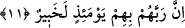

“derlenip toparlandığı zaman.” Yâni göğüslerde ne varsa derlenip toparlanıp bir yere
yığıldığı zaman...
Bu âyette yer alan “hussıle” kelimesinin kökü olan “tahsîl”; herhangi bir şeyin,
kendini örten kabuktan dışarı çıkarılması, oradan alınması demektir. Özün kabuktan
çıkarılması, altının cevheri olan topraktan çıkarılması, buğdayın samandan, yağın sütten
ve çökelekten çıkarılması gibi...
Bu âyete şöyle bir mânâ vermek de mümkündür: Göğüslerde olanların hayırlıları
şerlerinden ayrıldığı zaman... Nitekim eleğe, bu kökten türeme, “mıhsal/ayırma âleti”
demişlerdir. Çünkü unu kepeğinden ayırır. Aynı şekilde vâcip, mendûb, mubâh, mekrûh
ve harâmın da birbirinden ayrılması gerekir. Çünkü herbirinin kendine mahsus hükmü
vardır. Şu halde bunların birbirinden ayrılması ve herbirine kendine âid hükmün
verilmesi, bir “tahsil” ameliyesidir.
Kâmûs’da bu kelime şöyle açıklanır: Tahsîl, hâsıl olan şeyi ayırmak demektir.
Herşeyin “hâsıl”ı, geri kalanı, sâbitleşeni ve kendisinden olmayan şeylerin ondan
ayrılıp gitmesi demektir.
Bu âyet-i kerimede husûsiyle kalbin amellerinden bahsedilmesinin sebebi şudur:
Kalpteki istekler ve iradeler olmasa uzuvların amelleri ortaya çıkmaz. Kalp asıldır,
uzuvların amelleri ise ona tâbîdir. Bu sebeple Allah Teâlâ: “Onun kalbi günahkardır”
(Bakara, 2/283) buyurmuştur. Nebiyy-i Ekrem (s.a.) Efendimiz: “Onlar niyyetlerine
göre dirilirler” buyurmuşlardır.[199]
11. Şüphesiz Rableri o gün onlardan tamamıyla haberdardır.
“Gerçekten o gün,” yâni, kabirlerdekilerin dirilecekleri, göğüslerdekilerin derlenip
toparlanacakları o gün “Rableri” yâni dirilenlerin Rableri “onlardan” onların zât, sıfat
ve bütün durumlarından tafsîlâtıyla “haberdardır.” Yâni zâhir ve bâtınlarını
bilmektedir. Yaptıklarının o gün verilecek karşılıklarından bahsedildiği için burada
bahsedilen bilgi sâdece o günle alâkalıdır. Nitekim bunun “o gün” ifâdesi ile
kayıtlanması da bunu göstermektedir. Yoksa Allah’ın mutlak ilmi, olmuş olacak herşeyi
ihâta etmiş, kuşatmıştır.
Dikkat edilirse görüleceği üzere, ikinci dirilişlerinin ardından onlardan söz edilirken
“Rabbehum” denilerek, “akıllı” varlıklara âid zamir kullanıldı. Hâlbuki yukarıda
akılsız varlıklara âid “mâ” edatı kullanılmıştı. Bunun sebebi, o iki hallerinin
birbirinden farklı olmasıdır. Çünkü onlar kabirlerinde iken, bir çeşit hayat sürmelerine
rağmen yine de aklı ve bilgisi olmayan cansız varlıklar mesâbesinde idiler. Ama haşir
vaktinde böyle değildirler.
“Habîr” kelimesinin kâideye göre önce gelmesi gerekirken daha sonra gelmesi, âyet